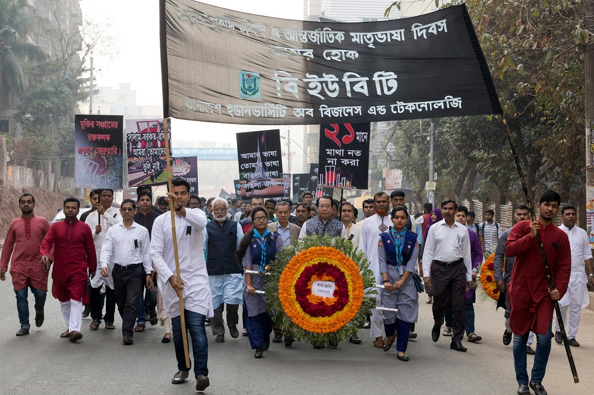
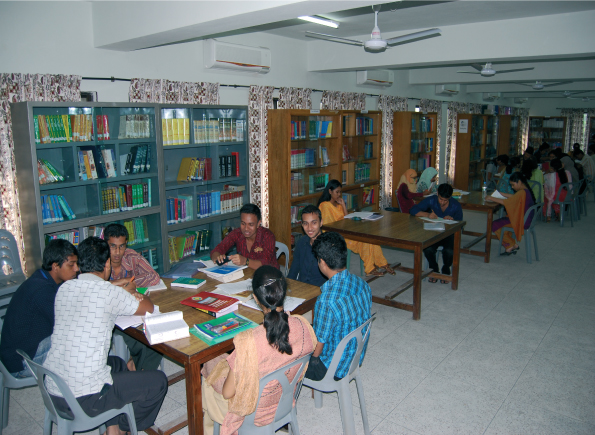

Bangladesh University of Business and Technology (BUBT) is a powerhouse of academic excellence that
champions the freedom of thinking. It has established a formidable reputation since its inception in 2003.
The university rises to one of the first ranking private universities because of its sound physical
facilities, outstanding teaching and the commitment to the future generation. The exception of BUBT lies in
the fact that all the members of the Trustee Board are, educationists, professors and entrepreneurs of
education. With the advent of their leadership the university is rapidly climbing to a place that observes a
unique position of international standard.
The vision of the university is to get the reputation of a world class university with a dynamic approach to
enable the students to create their place in the world. With this aim the university has been advancing with
the strong support with its valued group of Board of Trustees. The members of the BUBT Trust are, Mr. A F M
Sarwar Kamal ( the Chairman of the Trustee Board), Prof. Dr. Shafique Ahmed Siddique, Mr. Md. Shamsul Huda
FCA, Mr. Ahmed Hossain, Lieutenant General Dr. A K M Zafrullah Siddiq (Retd.), Prof. Md. Abu Saleh, Prof
Mian Lutfar Rahman, Tahmina Azam and Md. Shihab Rizwan, Dr. Kazi Nur-ul-Ferdous. Its sister concern
institute is Dhaka Commerce College, one of the renowned private colleges of the country. The permanent
campus of BUBT has been located at Rupnagar, Mirpur, whereas the other campus is also in Mirpur, adjacent to
Dhaka Commerce College. The outstanding achievement of BUBT in the very first decade has been to remain
student focused. The number of the student enrollment is envious and it exceeds 10 thousand in the month of
October 2017. However BUBT never compromises with the quality, professionalism and sustainability. The
university believes in the motto “committed to academic excellence”--- a slogan that thrives the spirit of
everyone.
The renowned magazine Bishwabidyaloy Campus mentioned on its cover page:
“The realistic and quality education that BUBT provides is time befitting to create skilled manpower for the
competitive world.” In an extensive interview with this magazine, the Convainor of Academic Advisory
Committee and Member of BUBT Trust Dr. Shafiq Ahmed Siddique said, “It’s a matter of hope that the nation is
thriving for change.” “I have spent my entire life in teaching and now I wonder that people, irrespective of
rich and poor are enthusiastically spending money after education now a days. This shows the beacon of the
day, the enlightening future of a nation”, he added. He emphasized on its educational strategies, saying,
“BUBT offers ample opportunities to let the poor and meritorious learners study in a congenial atmosphere.”

At present eleven departments are successfully going on under the auspicious supervision of five faculties.
They are, Faculty of Business, Faculty of Arts and Humanities, Faculty of Social Sciences, Faculty of Law,
Faculty of Engineering and applied Sciences. The curriculum of the university has been modelled after the
North American style. The standard design of syllabus and deploying other strategies to make the learners
competitive to the world may sound ambitious but BUBT has a responsibility to lead by example.
The library of BUBT is a home to a number of collection of books. The two campuses of BUBT have two
different libraries rich with the books, latest journals, newspapers and research resources. The university
has some on-campus publications which invite scholarly articles from the writers of different fields. The
purpose of them is to serve the needs and expand the creative voice of the contributors from the literary
and other disciplines.
The students of BUBT are always playing formidable roles making themselves competitive to the present world.
The members of the Debating Club, Sports Club, Photography Club, Cultural Club IT Club not only compete in
the national level but also prove their individual charisma in outstanding fields. Even the young computer
programmers of CSE department has shown their analytical wit participating in the international contests.

The seminars, symposiums, workshop, film show, quiz competitions on different aspects are regularly organized by the departments of BUBT. These educational events expand the horizon of the mental boundary of the teachers and students alike to think analytically, creatively and in organized way.